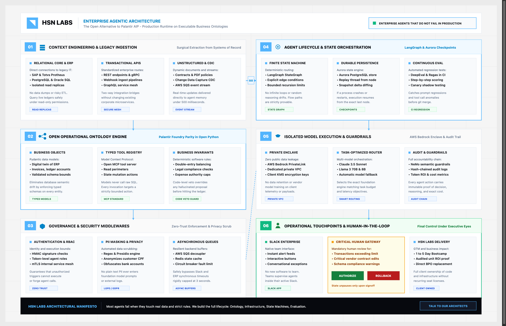

Reading time: 14 minutes. Author: Hugo S. Nascimento.
Context: Most enterprise software architectures treat data as passive historical exhaust and business rules as human documentation in Notion or Confluence. When autonomous AI agents are introduced into this environment, they fail because there is no executable layer connecting live state to authorized business actions. This essay details the architecture of an Operational Ontology—the kinetic engine required to run production AI agents.
Executive Summary
Enterprise data architecture has spent twenty years building passive data graveyards. We extract data from production systems, dump it into data lakes (Snowflake, Databricks), transform it with dbt, and visualize it on dashboards for human managers to review on Monday morning.
This passive paradigm is completely useless for autonomous AI agents.
An AI agent does not look at a dashboard. An AI agent must act. It must reconcile a payment, issue a purchase order, re-route a shipping container, or quarantine a compromised user account.
To enable autonomous action without risking corporate bankruptcy, enterprises must transition from passive data models to an Operational Ontology.
An Operational Ontology is an active software layer that fuses three foundational primitives into a single executable interface:
- Live State Synchronization: Real-time bi-directional bindings to core enterprise software (SAP, Salesforce, Postgres, Kafka).
- Deterministic Business Invariants: Code-level assertions that define what states and actions are legally permissible.
- The Kinetic Action Engine: A catalog of atomic, parameterized tools governed by finite state machines that agents can execute via protocols like the Model Context Protocol (MCP).
flowchart TD
subgraph OLD["Passive Data Warehouse: Built for Humans"]
P1[Production DBs] --> P2[Data Lake]
P2 --> P3[dbt Models]
P3 --> P4[BI Dashboard]
end
subgraph NEW["Operational Ontology: Built for Autonomous Agents"]
ERP["Core ERP / CRM"] <-->|CDC / Kafka| ONT["Operational Ontology<br>Entities + Invariants"]
ONT <-->|Atomic MCP Tool Calls| AGT[Autonomous AI Agent]
endThe Palantir Lesson: Why the Value Lies in the Ontology
To understand why operational ontologies are dominating enterprise software discussions, one must analyze the commercial trajectory of Palantir Technologies.
When Palantir launched its Artificial Intelligence Platform (AIP), its enterprise customer acquisition accelerated dramatically. Competitors assumed Palantir had trained a proprietary foundation model or developed a breakthrough prompt engineering framework.
They were wrong. Palantir does not build frontier models. Palantir leverages models from Anthropic, OpenAI, and open-source consortia.
Palantir's multi-billion-dollar moat is the Palantir Ontology.
For two decades, Palantir deployed forward deployed engineers into the defense sector, intelligence agencies, and global commercial conglomerates to solve a single problem: mapping fragmented, messy enterprise data into an executable semantic model of operations.
In Palantir AIP, the LLM is merely an interchangeable reasoning engine sitting at the edge. When an operator in a defense cockpit or an oil refinery asks an agent to optimize production, the agent does not touch raw databases. It executes against the Ontology. The Ontology guarantees that actions comply with security classifications, physical equipment tolerances, and statutory rules before anything moves in the physical world.
The strategic realization for the enterprise C-suite in 2026 is that you do not need to sign an annual eight-figure contract with Palantir to gain this capability.
By leveraging modern open protocols—specifically Python, Pydantic, PostgreSQL, and FastMCP—enterprises can build modular, fully owned operational ontologies tailored to their exact business mechanics.

The Three Pillars of an Operational Ontology
Building an operational ontology requires moving beyond passive metadata management. It consists of three tightly coupled engineering layers:
flowchart TD
A["1. Semantic Data Binding<br>Ingests real-time events via CDC and Kafka<br>Synthesizes fragmented multi-system schemas<br>Enforces atomic read consistency"]
B["2. Kinetic Invariant Harness<br>Compiles business rules into typed schema assertions<br>Governs lifecycle states via Finite State Machines<br>Enforces mathematical balance constraints"]
C["3. Atomic Action Registry<br>Exposes parameterized tools via Model Context Protocol<br>Verifies preconditions before dispatching mutations<br>Generates immutable cryptographic audit trails"]
A --> B --> CPillar 1: Semantic Data Binding (The Nouns)
In a modern enterprise, an operational entity never lives in a single database.
- A Customer has billing data in Stripe, master contract terms in Salesforce, usage metrics in Snowflake, and credit limits in SAP.
- If you ask an LLM to query these systems directly, it will fail due to schema fragmentation and divergent naming conventions (
cust_idvs.account_uuidvs.client_number).
The Semantic Data Binding layer abstracts this fragmentation. It uses Change Data Capture (CDC) to stream updates from underlying databases into a unified, in-memory domain model. When an agent queries CustomerAccount("CUST-9401"), it receives a consolidated, strongly typed object representing unified truth at that millisecond.
Pillar 2: The Kinetic Invariant Harness (The Rules)
Business rules must live in compiled code, never in human documentation or natural language prompt templates.
An operational ontology models business logic as mathematical invariants. An invariant is a condition that must evaluate to True before, during, and after any state transition.
- In financial operations:
GrossAmount == NetAmount + TaxAmount. - In supply chain:
CommittedInventory <= TotalPhysicalStock - QuarantinedStock. - In healthcare:
DispenseDrug(D) -> PatientHasAllergy(D.compound) == False.
If an agent attempts an action that would violate an invariant, the ontology blocks the execution at the code boundary. The agent is physically incapable of committing an invalid transaction.
Pillar 3: The Atomic Action Registry (The Verbs)
The Action Registry maps corporate capabilities into discrete, executable contracts.
In an operational ontology, agents are never granted raw SQL write access (UPDATE, INSERT, DELETE) or unrestricted REST API keys. Instead, they are granted access to a catalog of curated Operational Actions exposed via standard tool-calling interfaces like FastMCP.
Every action in the registry is:
- Parameterized: Governed by strict Pydantic or JSON schemas.
- Idempotent: Safe against network retries and agent loop re-entries.
- State-Gated: Can only be executed if the target object occupies a specific state in its finite state machine.
- Audited: Emits a structured telemetry event to Kafka or an immutable ledger recording the authorizing agent ID, timestamp, pre-state, post-state, and operational parameters.
Production Architecture: Building an Action Harness with Model Context Protocol
In an enterprise logistics operational ontology, autonomous agents are granted execution capabilities through state-governed, invariant-protected action harnesses operating over the Model Context Protocol (MCP).
Consider an emergency maritime container rerouting workflow (reroute_maritime_container). Rather than allowing an LLM to issue unverified commands to a terminal operating system (TOS), the ontology gates the action across four sequential verification tiers:
| Execution Stage | Architecture Component | Enforced Operational Invariant |
|---|---|---|
| 1. Request Payload Contract | RerouteContainerPayload |
Parameter Validation: Validates container ID format, uppercase UN/LOCODE port identifier, operational reason code, and positive estimated rerouting cost. |
| 2. Live State Hydration | Entity Domain Store (CDC Cache) | Hydrates container state (CargoContainer), vessel identifier, destination port, hazardous material status, and daily demurrage costs from memory in microseconds. |
| 3. Finite State Machine Gate | Lifecycle FSM Guard | State Purity: Container status must be strictly IN_TRANSIT. If container is in HELD_CUSTOMS, RELEASED, or DELIVERED, execution is immediately aborted. |
| 4. Capital Allocation Invariant | Economic Ceiling Enforcement | Autonomous Ceiling: Maximum autonomous diversion cost ceiling is capped at $25,000 USD. Costs exceeding threshold require mandatory human Maritime Director sign-off. |
The Architectural Beauty of this Model
Notice what is happening here from an systems engineering perspective:
- Zero Prompt Vulnerability: The agent cannot trick the system by saying "This is an emergency, waive the cost limit." The
AUTONOMOUS_DIVERSION_CEILINGis hardcoded Python logic. It evaluates independently of the model's linguistic interpretation. - State Purity: If the container was already in
HELD_CUSTOMSstatus, the agent is physically blocked from rerouting it. The finite state machine enforces the statutory sequence of shipping law. - Seamless Tool Discovery: Because this is exposed via FastMCP, any autonomous agent orchestrator (LangGraph, OpenAI Swarm, Claude Code, Antigravity) automatically discovers the tool, its parameter constraints, and its return signatures.
[Agentes] x [a Gente] — Beyond the hype: how agentic engineering multiplies and leverages human labor capacity. Bi-weekly field notes published in Hugo S. Nascimento's LinkedIn newsletter with over 1,600 subscribers. Follow on LinkedIn ↗
Enterprise Case Study: Autonomous Claims Settlement in Insurance
To demonstrate the economic power of an operational ontology, consider a Tier-1 healthcare and insurance conglomerate processing 80,000 corporate claims per week.
The Legacy Failure Mode
Under traditional operations, 400 outsourced BPO analysts manually inspect claims PDFs, check policy coverage in an AS400 legacy mainframe, verify deductible balances in SAP, and issue wire transfers.
When the insurer tested standard LLMs with LangChain and vector databases to automate the process, the failure rate was over 30%:
- Agents approved claims for patients whose policies had lapsed two days prior.
- Agents calculated reimbursement amounts using average market rates instead of contractually agreed tariff tables.
- Multiple agents processed duplicate claims simultaneously, issuing double payouts.
The Operational Ontology Fix
The engineering team replaced the prompt-based architecture with an Insurance Operational Ontology:
- Domain Objects:
PatientPolicy,MedicalClaim,TariffSchedule,ProviderAgreement. - Invariants:
- A claim can never be adjudicated unless
PatientPolicy.status == ACTIVEat the exact timestamp of medical service. - Payout amount must equal
ClaimItems * TariffRate - DeductibleBalance. Zero floating point deviation allowed. - Idempotency lock: A claim ID occupies an immutable distributed lock during processing to prevent concurrent processing.
- Results:
- Autonomous Adjudication Rate: 72% of all claims adjudicated with zero human touch.
- Error Rate in Production: 0.00% on mathematical calculations and state transitions.
- Financial Impact: Reduced outsourced BPO contract by $4.2 million annually while cutting claim processing latency from 9 days to 45 seconds.
The Economic Equation: Breaking the Linear Scaling Trap
Traditional enterprises suffer from the Linear Staffing Trap: if business transactions grow by 100%, operational headcount (and OPEX) must grow by roughly 100%.
flowchart LR
subgraph TRAD[Traditional Enterprise]
T1["10k tx/mo: 20 FTE"] --> T2["50k tx/mo: 100 FTE"] --> T3["100k tx/mo: 200 FTE<br>Linear OPEX Explosion"]
end
subgraph ONTO[Ontology-Governed Enterprise]
O1["10k tx/mo: 20 FTE"] --> O2["50k tx/mo: 25 FTE"] --> O3["100k tx/mo: 30 FTE<br>Expanding EBITDA Margins"]
endAn operational ontology transforms software from a passive record-keeping expense into an autonomous operational asset.
Because the ontology provides verifiable safety, enterprises can delegate real operational authority to agent fleets. The human team stops performing manual copy-paste validation across disparate software interfaces and transitions to managing exceptions, tuning invariant thresholds, and handling complex edge cases.
Conclusion: The Mandate for 2026
If your enterprise AI strategy consists of building internal chatbots, fine-tuning generalist models, or deploying vector search over internal wikis, you are wasting capital.
The competitive battlefield of enterprise artificial intelligence is operational execution. The companies that win will not be the ones with the largest prompt engineering teams. They will be the ones that formalize their enterprise business mechanics into an executable Operational Ontology.
Stop asking what model to use. Start asking: Where is the code that defines our operational invariants and governs autonomous action?
If that code does not exist, your AI agents cannot safely operate. Build the ontology first. Production autonomous systems will follow.
At HSN Labs, we design and deploy bespoke operational ontologies and resilient multi-agent systems for mid-to-large enterprises. To map your enterprise state machines and launch a production pilot in five days, explore our on-site Agentic Architecture Bootcamp.
Strategic Resources and Related Essays
- How to Build an Enterprise Ontology from Scratch: Step by Step
- How to Build an Operational Business Ontology in Python and MCP
- Ontology vs. Knowledge Graph: Key Differences, Architecture, and Agent Reliability
- Apply for the HSN Labs Five-Day Architecture Bootcamp
Article originally published on HSN Labs. Author: Hugo S. Nascimento.